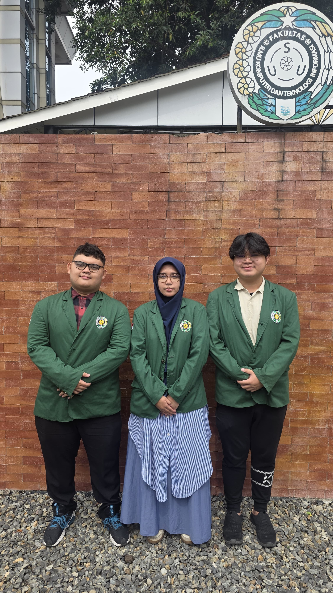
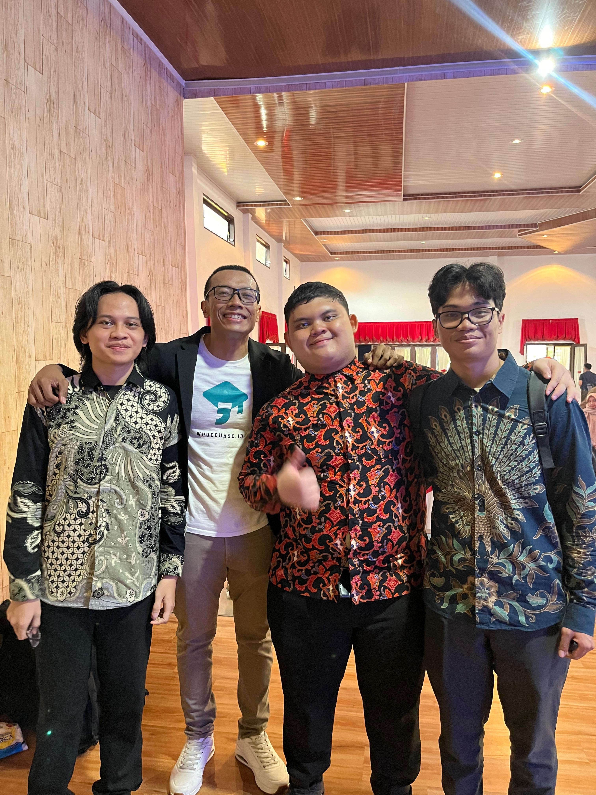

GREETINGS FUTURE PARTNER
I'm Daffa Umayans Saragih.
Information Technology Student & Technology Enthusiast.
A second semester student at the University of North Sumatra who is enthusiastic about exploring the world of Web Development, C++ Algorithms, Game Development, and Artificial Intelligence.

Tentang Saya
Perjalanan saya di dunia IT dimulai dari rasa penasaran yang tinggi sejak bangku SMA, di mana saya aktif dalam organisasi dan kompetisi akademik.
Kini, sebagai mahasiswa Teknologi Informasi di Universitas Sumatera Utara, saya fokus membangun fondasi yang kuat dalam logika pemrograman dan struktur data. Saya percaya bahwa teknologi adalah alat terbaik untuk memecahkan masalah nyata.
Fokus Saat Ini:
Pendidikan
Jejak akademik dan tempat saya menimba ilmu.


Experience & Activities
Pengalaman profesional, dedikasi pengajaran, serta dokumentasi interaktif.
IT Support Staff
Yayasan Cahaya Inspirasi Sofyan Tan
Mengelola infrastruktur IT, pemeliharaan perangkat, serta menangani troubleshooting sistem secara operasional untuk mendukung kebutuhan yayasan.
Informatics Olympiad Instructor (C++ Oriented)
SMA & SMK Sultan Iskandar Muda
Membimbing dan melatih siswa dalam pemecahan masalah algoritmik tingkat lanjut dan soal HOTS olimpiade. Menekankan pada efisiensi struktur data dan logika pemrograman kompetitif menggunakan bahasa C/C++.
Galeri Aktivitas & Dokumentasi
Dokumentasi dinamis kegiatan hackathon, kompetisi catur, sesi mengajar, dan organisasi.
Honors & Awards
Rekam jejak prestasi dan pencapaian akademik.

Juara 3 - Lomba "Tarik Data" GDG Medan
2026
Mengalahkan puluhan tim praktisi profesional dan dosen dalam kompetisi Data Science bergengsi. Membangun model analisis prediktif dan visualisasi data interaktif berskala besar menggunakan Google BigQuery dan Google Data Studio dengan presisi analitis tingkat tinggi.

Finalis Global (Top ±450 Tim) - International Agentic AI Sokrates Binus
2026
Merancang dan men-deploy arsitektur Agentic AI otonom tingkat enterprise. Mendemonstrasikan penguasaan teknis mendalam dalam mengintegrasikan Large Language Models (LLM) via AWS Bedrock dengan sistem ERP SAP S/4HANA OData, menyisihkan ratusan tim engineer profesional dan akademisi global.

Finalis - Codefest UI/UX Designer
2025
Membuktikan keahlian dalam User Experience Engineering. Sangat terampil menggunakan tool Google Stitch dan memadukannya secara seamless dengan alat desain standar industri seperti Figma untuk menciptakan prototyping antarmuka yang fungsional dan berpusat pada pengguna.

Awardee Sofyan Tan Scholarship
2025
Agen perubahan yang terpilih memimpin dengan inklusivitas, toleransi, dan semangat Kebhinekaan.

Lulus Seleksi Masuk PTN
2025
Berhasil lulus SNBP masuk Universitas Sumatera Utara (USU) program studi Teknologi Informasi.

Medali Perak OSPO
2024
Peraih Medali Perak Olimpiade Sains Pra-OSK (OSPO) tingkat Provinsi bidang Informatika.

Medali Perunggu OSPO
2023
Peraih Medali Perunggu Olimpiade Sains Pra-OSK (OSPO) tingkat Provinsi bidang Informatika.

Project
Penerapan teori ke dalam aplikasi nyata.
Rexa — Agentic AI Retail Logistics
Sistem Agentic AI otonom untuk otomasi rantai pasok UMKM. Tidak hanya berfokus pada backend, saya mendesain visualisasi Virtual Environment 3D sebagai solusi antarmuka agar pengguna (user) non-teknis tertarik dan sangat enjoy menggunakannya. Membutuhkan arsitektur coding tingkat lanjut untuk menghubungkan staf NPC AI (Gudang, Keuangan, Guardrails) di dunia virtual agar dapat memproses persetujuan PO secara real-time ke sistem ERP SAP.

Tic Tac Toe w/ Bot
Permainan Tic Tac Toe yang dilengkapi dengan Bot cerdas berbasis pengenalan pola (Pattern AI) yang sulit dikalahkan.
Lihat Kode →
The Crusty Crab
Website profil restoran KRUSTY KRAB dengan tema kartun ikonik, menampilkan menu interaktif dan desain visual yang menarik.
Lihat Kode →
Toko Barang Elektronik
Sistem aplikasi manajemen inventaris toko untuk mengelola stok barang masuk dan keluar secara efisien (Create, Read, Update, Delete).
Lihat Kode →
Snake IO Game
Game klasik Snake yang dibangun dengan logika Array dan manipulasi DOM, melatih pemahaman struktur data antrian (Queue).
Lihat Kode →